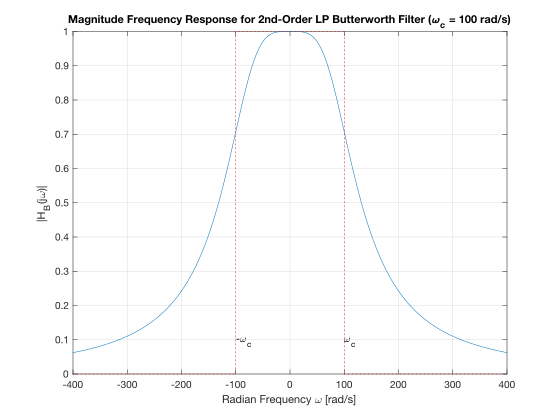
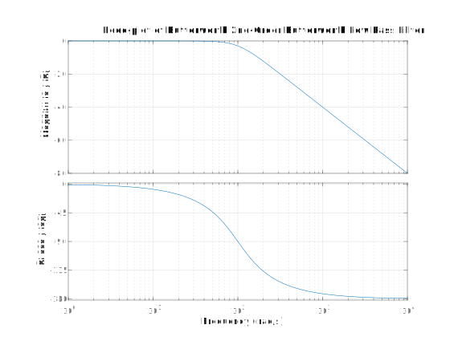
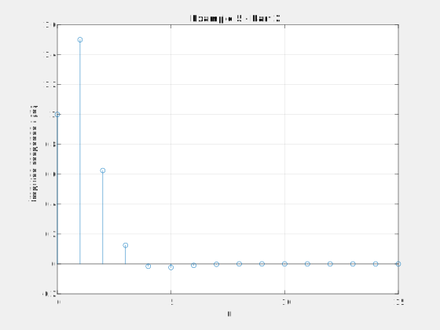
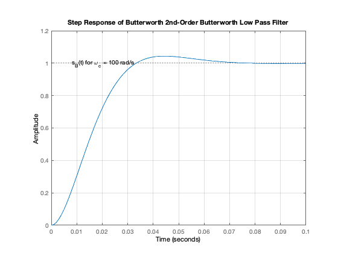
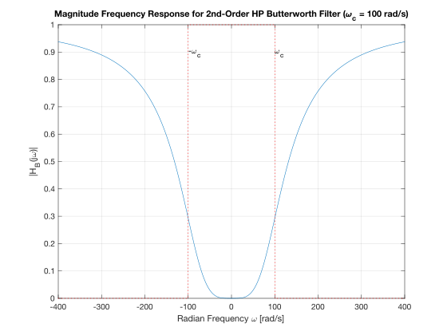

imatlab_export_fig('print-svg') % Static svg figures.
wc = 100;
H = tf(wc^2,[1, wc*sqrt(2), wc^2])
H =
10000
---------------------
s^2 + 141.4 s + 10000
Continuous-time transfer function.
w = -400:400;
mHlp = 1./(sqrt(1 + (w./wc).^4));
plot(w,mHlp)
grid
ylabel('|H_B(j\omega)|')
title('Magnitude Frequency Response for 2nd-Order LP Butterworth Filter (\omega_c = 100 rad/s)')
xlabel('Radian Frequency \omega [rad/s]')
text(100,0.1,'\omega_c')
text(-100,0.1,'-\omega_c')
hold on
plot([-400,-100,-100,100,100,400],[0,0,1,1,0,0],'r:')
hold off

bode(H)
grid
title('Bode-plot of Butterworth 2nd-Order Butterworth Low Pass Filter')

impulse(H,0.1)
grid
title('Impulse Response of 2nd-Order Butterworth Low Pass Filter')

step(H,0.1)
title('Step Response of Butterworth 2nd-Order Butterworth Low Pass Filter')
grid
text(0.008,1,'s_B(t) for \omega_c = 100 rad/s')

w = -400:400;
plot(w,1-mHlp)
grid
ylabel('|H_B(j\omega)|')
title('Magnitude Frequency Response for 2nd-Order HP Butterworth Filter (\omega_c = 100 rad/s)')
xlabel('Radian Frequency \omega [rad/s]')
text(100,0.9,'\omega_c')
text(-100,0.9,'-\omega_c')
hold on
plot([-400,-100,-100,100,100,400],[0,0,1,1,0,0],'r:')
hold off

Hhp = 1 - H
bode(Hhp)
grid
title('Bode-plot of Butterworth 2nd-Order Butterworth High Pass Filter')
Hhp =
s^2 + 141.4 s
---------------------
s^2 + 141.4 s + 10000
Continuous-time transfer function.